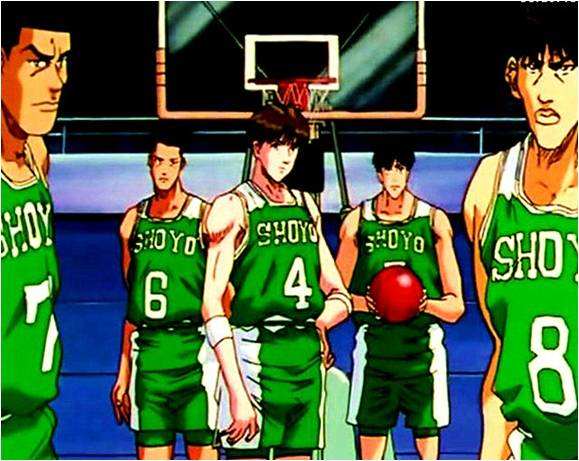

|  | ||
|
藤真健司 藤真作教练应该是在他二年级夏天过后，三年级学长们引退了，他才做的教练，也就是藤真上二年级的第二个学期。因为，藤真在二年级夏天参加全国大赛，与南烈交手时，南烈在比赛中对藤真说：“真了不起啊，不单是二年级中唯一的正选，而且更是皇牌！”由此推断，藤真这时还不是教练。并且，也可从中看出，花形等人 藤真在翔阳这支强队历史上是唯一一年级便成为主力的，并且当时就成为了王牌。作为教练的他，冷静自持，运筹帷幄。而到了场上又热情似火，敢打敢拼。他有着卓越的领导才能，曾带领翔阳连续两年打进全国大赛。是翔阳的绝对的灵魂人物。 然而，在高三的夏季联赛中不幸以一球之差负于主角湘北高中。 他的风度与才华却由此深深印刻在观众们的心里。 Fujima click it |
花形透 花形是可靠的准王牌，所以藤真才能信任他，虽然说那场比赛局势的变化出乎意料，但我想这并未动摇藤真的信任——花形为他的球队和教练，已经竭尽所能。而且考虑到花形这是首次以首发中锋的身份出场，你便不能不惊讶于他的冷静——根据彩子等人的叙述，翔阳上年除了藤真，其余全是个头不高的三年级，自然就没有花形什么事，而在南烈等人的回忆中，在翔阳队中藤真战斗时，花形哥哥还在板凳上替他加油，前年的情况根据观众回忆，翔阳上场的球员中只有藤真一个一年级，唔，翔阳真可怕，为什么非得让老家伙们出场不可呢？这样一算下来，这个冷静沉着的传说的三大中锋之一，竟然没有正式为翔阳以先发主力身份出场过，叹，翔阳板凳上的中锋，居然也在县内享有盛誉，这个排名到底如何弄出来的啊——汗，虽然有点疑心，但我绝对支持花形哥哥入围！ Toru Hanagata click it |
|